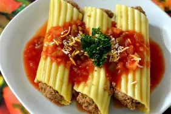

Manicotti

Description
This is a recipe for manicotti that I found on the internet from the link provided by The Odin Project. It is similar to lasagna
and spaghetti, but it is made inside of a shell and then covered with tomato sauce and cheese. It is a great meal to serve while
having family over.
Ingredients
- 5 1/2 ounces manicotti pasta
- 1 pint part-skimmed ricotta cheese
- 8 ounces shredded mozarella cheese
- 3/4 cup grated Parmesan cheese, divided
- 2 large eggs
- 1 teaspoon dried parsley
- salt/ground pepper to taste
- 1 (16 ounce) jar spaghetti sauce
Steps
- Step 1: Cook manicotti in boiling water until al dente, about 10 to 12 minutes; drain
and rinse with cold water
- Step 2: Preheat oven to 350 degrees F (175 degrees C)
- Step 3: Mix ricotta, mozarella, 1/2 cup Parmesan cheese, eggs, parsley, salt, and pepper
in a large bowl until well combined
- Step 4: Pour 1/2 cup spaghetti sauce into an 11x17-inch baking dish. Stuff each manicotti
shell with 3 tablespoons cheese mixture, and arrange over sauce. Pour remaining sauce over the top of the shells
and sprinkle with remaining Parmesan cheese
- Step 5: Bake in preheated oven until bubbly, bout 45 minutes